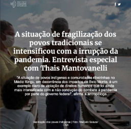

Povos e Comunidades Tradicionais
Olá! Essa é a primeira aula do Módulo 1 do curso Covid-19 e a atenção à gestante em comunidades indígenas e tradicionais. Ao final da aula, você vai ser capaz de:
-
Compreender os principais conceitos e definições que envolvem os povos e comunidades tradicionais.
-
Identificar os principais órgãos e instituições que tratam dos povos e comunidades tradicionais.
-
Enumerar os principais marcos de legislação e regulamentação.
Para uma experiência de aprendizagem mais ampla, assista aos vídeos e visite os materiais e links externos que estão disponíveis ao longo do texto. Eu vou sempre te indicar materiais que podem contribuir para o seu aprendizado.
Principais conceitos e definições
O Brasil é amplamente reconhecido pela riqueza e diversidade natural e étnicocultural de seu povo, que também pode ser representada pelas diversas comunidades tradicionais, com seus modos de vida diferenciados. Entre as principais comunidades tradicionais, podemos citar os povos indígenas, os quilombolas, os pescadores artesanais, os ribeirinhos, os caboclos, e inúmeros outros.
Embora constituam uma importante parcela da população brasileira, esses povos e comunidades se tornaram invisíveis à sociedade e ao poder público - o que é refletido na ausência de instâncias governamentais responsáveis pela implementação de políticas públicas para essas comunidades.
A Política Nacional de Desenvolvimento Sustentável dos Povos e Comunidades Tradicionais , instituída pelo Decreto nº 6.040/2007, tem como principal objetivo:
Art. 2o. A PNPCT tem como principal objetivo promover o desenvolvimento sustentável dos Povos e Comunidades Tradicionais, com ênfase no reconhecimento, fortalecimento e garantia dos seus direitos territoriais, sociais, ambientais, econômicos e culturais, com respeito e valorização à sua identidade, suas formas de organização e suas insituições.
Fonte: Decreto nº 6.040/2007
Nesse contexto, os povos e comunidades tradicionais foram caracterizados como grupos que se reconhecem por suas culturas diferenciadas, cujas formas de organização social estão intimamente associadas à ocupação de territórios e recursos naturais que, por sua vez, se tornaram indispensáveis para a reprodução cultural, social, religiosa, ancestral e econômica desses povos e comunidades.
Trata-se de um conceito amplo que também abarca ciganos, matriz africana, seringueiros, castanheiros, quebradeiras de coco-de-babaçu, comunidades de fundo de pasto, faxinalenses, marisqueiras, varjeiros, caiçaras, praieiros, sertanejos, jangadeiros, ciganos, açorianos, campeiros, varzanteiros, pantaneiros, caatingueiros, pomeranos, entre outros.
Essa política entende que, num país tão diverso em sua composição étnica e cultural, é um grande desafio estabelecer e implementar políticas públicas para promoção do bem-estar social dessas populações que, muitas vezes, encontram-se na invisibilidade, sendo socialmente excluídas por pressões econômicas, fundiárias ou por processos discriminatórios.
Dividida em princípios gerais e objetivos específicos, a política está estruturada em quatro grandes eixos:
- garantia de acesso a territórios tradicionais e aos recursos naturais;
- infraestrutura;
- inclusão social e educação diferenciada;
- fomento à produção sustentável.
É importante destacar os vários benefícios que esses grupos promovem para a coletividade nacional. Eles contemplam modos próprios de vida, relações territoriais, preservação da memória, história e patrimônio cultural material e imaterial, saberes tradicionais no uso de recursos naturais. Por isso, seu reconhecimento formal e a promoção dos seus direitos contribuem para a redução da desigualdade e para a promoção da justiça social.
Entre esses povos e comunidades tradicionais, encontram-se alguns aspectos que determinam os seus modos próprios, de ser e de viver:
No que se refere aos territórios tradicionais, as relações estabelecidas com as terras tradicionalmente ocupadas e seus recursos naturais fazem desses lugares mais do que terras. Eles assumem a qualificação de território, o que implica em dimensões simbólicas, onde estão impressos os acontecimentos ou fatos históricos que mantêm viva a memória do grupo; nele estão enterrados os ancestrais e encontram-se os sítios sagrados; ele determina o modo de vida e a visão de homem e de mundo; o território é também apreendido e vivenciado a partir dos sistemas de conhecimento locais, ou seja, não há povo ou comunidade tradicional que não conheça profundamente seu território.
Com frequência, os território de povos e comunidades tradicionais ultrapassam as divisões político-administrativas (municípios, estados). Um território tradicional pode, assim, encontrar-se na confluência de dois, três ou mais municípios, estados ou mesmo países. Portanto, nesse contexto, é preciso considerar e respeitar a distribuição demográfica tradicional desses povos, quaisquer que sejam as unidades geopolíticas definidas pelo Estado.
Do ponto de vista histórico, cabe ressaltar que esses povos e comunidades são marcados pela exclusão não somente por fatores étnico-raciais, mas, sobretudo, pela impossibilidade de acessar as terras por eles tradicionalmente ocupadas, em grande medida usurpadas por grileiros, fazendeiros, empresas, interesses desenvolvimentistas ou até pelo próprio Estado.
No que se refere à produção de povos e comunidades tradicionais, destacam-se: plantio, criação, caça, pesca, extrativismo, artesanato, geralmente associadas às relações de parentesco e compadrio. São baseadas em relações de troca e solidariedade entre famílias, grupos locais e comunidades, onde vender para o mercado não é o único fim; parte considerável da produção é destinada ao consumo e às práticas sociais (festas, ritos, procissões, folias de reis), mantendo a unidade do grupo.
Essas produções e manifestações dos povos e comunidades tradicionais são marcadas por ritmos e lógicas próprias considerando os seus processos produtivos, estruturados nos princípios de autonomia e liberdade, onde os grupos sociais são detentores de expressões culturais próprias e possuem um repertório de mitos, ritos e conhecimentos herdados de seus ancestrais. Nesse sentido, é comum a associação de práticas produtivas ao calendário religioso, com festas de santo, novenas, trezenas e penitências, garantindo uma fartura na colheita e na vida social.
Em relação à organização social, esses povos e comunidades tradicionais têm como característica a conformação de famílias extensas ou ampliadas, onde vários núcleos familiares residem na mesma casa com os avós, filhos, netos, afilhados e outros agregados. Nesses contextos, a família é o centro de toda a organização social, estando envolvida nas relações sociais, culturais e econômicas e a partir da aglutinação de vários sítios familiares se constrói um território e uma ancestralidade comum.
As relações sociais dos povos e comunidades tradicionais, normalmente se constroem e se mantêm a partir da interação com outros grupos da região, onde os membros costumam utilizar termos próprios para se referir ao próprio grupo, se reconhecendo em um processo de autoidentificação. Entretanto, nessas relações costumam ser frequentes a existência de divisões ou tensões internas ou com outros grupos. Nesse sentido, não se trata de comunidades homogêneas ou fechadas.
Historicamente os povos originários e comunidades tradicionais do Brasil enfrentam a negligência do Estado diante de contextos de vulnerabilidade. Esses povos enfrentam desafios como o aumento do desmatamento, das invasões de garimpeiros ilegais em seus territórios, a paralisação das demarcações pelo governo federal e o avanço da pandemia. Esse contexto impede a segurança e a qualidade de vida dessas populações.
Sabe, várias questões sociais nos deixam mais vulneráveis. E não é pouca coisa não! Por isso, tem gente, cientista, que estuda e analisa nossos problemas para sugerir mudanças nas políticas públicas.
Como nós vivemos muito ligados à natureza, tudo que envolve o meio ambiente, em terras próximas a nós, nos torna vulneráveis, como a mineração e a construção de barragens. Se você quiser entender um pouco mais sobre essas questões, dá uma olhada na matéria A situação de fragilização dos povos tradicionais se intensificou com a irrupção da pandemia, do Instituto Humanitas.
Fonte: Instituto Humanitas
Os Povos e Comunidades Tradicionais em geral também têm dificuldade de acesso aos serviços básicos de saúde. Visando minimizar essas desigualdades, algumas políticas específicas foram implementadas:
A Política Nacional de Atenção à Saúde dos Povos Indígenas tem o propósito de garantir aos povos indígenas o acesso à atenção integral à saúde, de acordo com os princípios e diretrizes do Sistema Único de Saúde, contemplando a diversidade social, cultural, geográfica, histórica e política de modo a favorecer a superação dos fatores que tornam essa população mais vulnerável aos agravos à saúde de maior magnitude e transcendência entre os brasileiros, reconhecendo a eficácia de sua medicina e o direito desses povos à sua cultura.
A Política Nacional de Saúde Integral da População Negra tem o objetivo de ampliar o acesso da população negra, em particular das comunidades quilombolas, às ações e aos serviços de saúde e criar mecanismos de enfrentamento ao racismo institucional no SUS, para superar as barreiras estruturais e cotidianas que têm impacto negativo nos indicadores de saúde dessa população, como as altas taxas de mortalidade materna e infantil, maior prevalência de doenças crônicas e infecciosas e altos índices de violência.
Você sabia?
Geralmente, nós, quilombolas, que vivemos no meio rural, temos altos índices de analfabetismo e condições de vida precária. A gente não tem saneamento, moradia e acesso aos serviços de saúde. Isso afeta diretamente a nossa saúde. Para citar um exemplo, o estudo Fatores de risco cardiovascular em idosos de uma comunidade quilombola , realizado em 2020, identificou elevada frequência de fatores de risco cardiovasculares nos idosos quilombolas atendidos na atenção primária à saúde, principalmente problemas relativos à hipertensão arterial, adiposidade abdominal e glicemia capilar elevada. Os resultados apontaram a necessidade de melhorar nosso acesso aos serviços de saúde. Vale ler esse estudo!
Fonte: Revista Enfermagem UERJ
Principais órgãos e instituições
A Conselho Nacional dos Povos e Comunidades Tradicionais (CNPCT), criado por meio do Decreto nº 8.750/2016 tem por finalidade o acompanhamento da Política Nacional de Desenvolvimento Sustentável dos Povos e Comunidades Tradicionais e aprimoramento das políticas públicas para os Povos e Comunidades Tradicionais que se identifiquem como grupos culturalmente diferenciados e que se reconhecem como tais, garantindo que suas tradições culturais, religiosas, econômicas e territoriais sejam preservadas.
A importância Política Nacional de Desenvolvimento Sustentável dos Povos e Comunidades Tradicionais, entre outras, é a de explicitar o reconhecimento estatal e a proteção de outros grupos culturalmente diferenciados, participantes do processo civilizatório nacional, para além de indígenas e quilombolas. Ela foi criada em um contexto de busca de reconhecimento e preservação de outras formas de organização social por parte do Estado.
O reconhecimento dos Povos e Comunidades Tradicionais ocorre mediante um processo composto de dois estágios: o autoreconhecimento e a autoidentificação. No âmbito do autoreconhecimento, considera-se as múltiplas formas que as comunidades reproduzem sua tradicionalidade, de maneira que seja um processo autônomo e essencialmente autogerido, em que a identidade coletiva é constituída a partir da identificação do grupo sobre si e sobre os demais membros. Portanto, para fazer parte, é necessário ser reconhecido pela comunidade como seu membro.
Dentre os princípios norteadores da PNPCT, destacam-se os seguintes:
III) a segurança alimentar e nutricional como direito dos Povos e Comunidades Tradicionais ao acesso regular e permanente a alimentos de qualidade, em quantidade suficiente, sem comprometer o acesso a outras necessidades essenciais, tendo como base práticas alimentares promotoras de saúde, que respeitem a diversidade cultural e que sejam ambiental, cultural, econômica e socialmente sustentáveis;
IV) o acesso em linguagem acessível à informação e ao conhecimento dos documentos produzidos e utilizados no âmbito da Política Nacional de Desenvolvimento Sustentável dos Povos e Comunidades Tradicionais;
V) o desenvolvimento sustentável como promoção da melhoria da qualidade de vida dos povos e comunidades tradicionais nas gerações atuais, garantindo as mesmas possibilidades para as gerações futuras e respeitando os seus modos de vida e as suas tradições.
Em relação a esses povos, o MDS apoia projetos específicos para a estruturação da produção familiar e comercialização, que auxiliam as famílias a produzirem alimentos de qualidade, com regularidade e em quantidade suficiente para seu autoconsumo e geração de excedentes. Esses projetos são realizados em parceria com outros órgãos que atuam junto aos Povos e Comunidades Tradicionais, como a Fundação Nacional do Índio (FUNAI), o Ministério do Meio Ambiente (MMA), o Ministério do Desenvolvimento Agrário (MDA), a Secretaria de Políticas Públicas de Promoção da Igualdade Racial (SEPPIR) entre outros órgãos e instituições. Nesse sentido, o MDS busca ampliar o acesso desses povos a ações como Acesso à Água, Programa de Aquisição de Alimentos da Agricultura Familiar (PAA) e Programa de Fomento às Atividades Produtivas Rurais.
Conheça os principais marcos de legislação e regulamentação
O direito étnico no Brasil é protagonizado inicialmente e, sobretudo, pelos povos indígenas, suas organizações representativas e indigenistas. O reconhecimento de direitos indígenas é bastante antigo e esteve presente em praticamente todas as constituições do país. Mas foi apenas na Constituição Federal de 1988 que eles tiveram reconhecidos os seus modos de vida em sua integralidade. Além disso, a partir do instituto do indigenato, eles têm usufruto exclusivo sobre as “terras tradicionalmente ocupadas”, conforme o artigo 231 da Constituição Federal.
Nesse contexto, são reconhecidos aos índios sua organização social, costumes, línguas, crenças e tradições, e os direitos originários sobre as terras que tradicionalmente ocupam, competindo à União demarcá-las, proteger e fazer respeitar todos os seus bens. São terras tradicionalmente ocupadas aquelas por eles habitadas em caráter permanente, utilizadas para suas atividades produtivas, imprescindíveis à preservação dos recursos ambientais necessários a seu bem-estar e para sua reprodução física e cultural, segundo seus usos, costumes e tradições.
O artigo 68 do Ato das Disposições Constitucionais Transitórias (ADCT), consagra aos remanescentes das comunidades de quilombos o direito à propriedade de suas terras, de acordo com uma política fundiária baseada no princípio de respeito aos direitos territoriais dos grupos étnicos e minoritários.
O Artigo 215 determina que o Estado proteja as manifestações culturais populares, indígenas e afro-brasileiras, e também as manifestações de outros grupos participantes do processo civilizatório nacional. No artigo 216, a Constituição Federal determina que deve ser promovido e protegido pelo Poder Público o patrimônio cultural brasileiro, considerando tanto os bens de natureza material quanto imaterial dos diferentes grupos formadores da sociedade brasileira. Nesse contexto, o Estado garante a todos o pleno exercício dos direitos culturais e acesso às fontes da cultura nacional, apoiando e incentivando a valorização e a difusão das manifestações culturais.
A Convenção 169 sobre Povos Indígenas e Tribais, da Organização Internacional do Trabalho (OIT), órgão da Organização das Nações Unidas (ONU), foi adotada em Genebra, em 27 de junho de 1989, e entrou em vigor internacional em 5 de setembro de 1991. No Brasil, o cumprimento dessa Convenção foi determinado pelo Decreto Presidencial n. 5.051, de 19 de abril de 2004.<
As Convenções Internacionais são normas que, quando assinadas pelos países, geram responsabilidades dos Estados e cidadãos em cumprirem o que elas determinam, sob pena de terem recomendações do organismo internacional que as elaborou, o que gera constrangimentos públicos internacionais.
Ao utilizar o termo “povos indígenas ou tribais”, entende-se que esses povos e populações possuem estilos de vida tradicionais, cultura e modo de vida diferentes dos outros segmentos da sociedade nacional, com costumes e formas de viver e trabalhar diferentes e necessitam de leis especiais. Desse modo, o artigo 1° da Convenção utiliza como critério fundamental para dizer se uma comunidade é ou não fundamental para dizer se uma comunidade é ou não protegida por ela “a consciência de sua identidade”, cabendo a eles próprios dizer se são ou não povos tradicionais.
A segunda conferência das Nações Unidas sobre Meio Ambiente e Desenvolvimento, conhecida como Eco-92, ocorreu em 1992 no Rio de Janeiro e, pela enorme repercussão que causou, inseriu definitivamente o meio ambiente entre os grandes temas da agenda nacional e global. O seu objetivo principal era buscar meios de conciliar o desenvolvimento socioeconômico com a conservação e proteção dos ecossistemas e biomas da terra.
Assinada em 1992, a Convenção da Diversidade Biológica passou a valer no Brasil a partir de 1998, por meio do Decreto n. 2.519, de 16 de março de 1998. Seus objetivos contemplam a conservação da diversidade biológica, a utilização sustentável de seus componentes e a repartição justa e equitativa dos benefícios derivados da utilização dos recursos genéticos. Essa Convenção é importante, porque trata ao mesmo tempo da conservação da biodiversidade e da proteção das comunidades tradicionais que vivem em estreita relação com os recursos naturais, expressados pelos conhecimentos e tecnologias tradicionais.
Em 2007, foi assinada pelo Brasil a Convenção sobre a Proteção e Promoção da Diversidade das Expressões Culturais e foi determinado o seu cumprimento (Decreto n. 6.177, de 1º de agosto de 2007). Essa Convenção destaca em diversos momentos a importância dos conhecimentos tradicionais e sua contribuição positiva para o desenvolvimento sustentável, devendo ser assegurada sua proteção e promoção. São alguns dos seus objetivos:
- proteger e promover a diversidade das expressões culturais; b) criar condições para que as culturas floresçam e interajam livremente em benefício mútuo;
- promover o respeito pela diversidade das expressões culturais e a conscientização de seu valor nos planos local, nacional e internacional;
- reafirmar a importância do vínculo entre cultura e desenvolvimento para todos os países, especialmente para aqueles em desenvolvimento;
- reconhecer a natureza específica das atividades, bens e serviços culturais enquanto portadores de identidades, valores e significados.
A Convenção também reafirma a convicção de que o diálogo intercultural é o meio mais adequado para a promoção da paz, da tolerância e do respeito à diferença. Constata-se que a cultura se encontra no centro dos debates contemporâneos sobre a identidade e consagra-se a diversidade cultural como patrimônio comum da humanidade. E, na relação intrínseca entre diversidade cultural e direitos humanos, reafirma a necessidade de proteção às diferentes identidades culturais.
A Lei nº 10.678/2003, cria a Secretaria Especial de Políticas de Promoção da Igualdade Racial (SEPPIR), com a tarefa institucional de coordenar e articular a formulação, coordenação e avaliação das políticas públicas de promoção da igualdade racial e de combate à discriminação racial ou étnica.
A Lei nº 12.288/2010, institui o Estatuto da Igualdade Racial, destinado a garantir à população negra a efetivação da igualdade de oportunidades, a defesa dos direitos étnicos individuais, coletivos e difusos e o combate à discriminação e às demais formas de intolerância étnica. Cabe salientar que parte considerável dos povos e comunidades tradicionais no Brasil sofre discriminação por critérios étnico-raciais.
Para efeito, esse estatuto define e esclarece os termos, definições e políticas públicas:
- discriminação racial ou étnico-racial;
- desigualdade racial;
- desigualdade de gênero e raça;
- composição da população negra;
- políticas públicas como as ações, iniciativas e programas adotados pelo Estado no cumprimento de suas atribuições institucionais;
- ações afirmativas como os programas e medidas especiais adotados pelo Estado e pela iniciativa privada para a correção das desigualdades raciais e para a promoção da igualdade de oportunidades.
Em 2007 a Assembleia Geral da ONU aprovou a Declaração Universal dos Direitos Indígenas, da qual o Brasil é um dos países signatários. Ressaltam-se da Declaração os seguintes artigos:
Artigo 3
Os povos indígenas têm direito à livre determinação. Em virtude desse direito, determinam livremente a sua condição política e perseguem livremente seu desenvolvimento econômico, social e cultural.
Artigo 4
Os povos indígenas no exercício do seu direito à livre determinação, têm direito à autonomia ou ao autogoverno nas questões relacionadas com seus assuntos internos e locais, assim como os meios para financiar suas funções autônomas.
Artigo 5
Os povos indígenas têm direito a conservar e reforçar suas próprias instituições políticas, jurídicas, econômicas, sociais e culturais, mantendo por sua vez, seus direitos em participar plenamente, se o desejam, na vida política, econômica, social e cultural do Estado.
Artigo 8
Os povos e as pessoas indígenas têm o direito a não sofrer da assimilação forçosa ou a destruição de sua cultura.
O Decreto nº 4.887/2003 regulamenta o procedimento para identificação, reconhecimento, delimitação, demarcação e titulação das terras ocupadas por remanescentes das comunidades de quilombos. Nesse contexto consideram-se remanescentes das comunidades dos quilombos, os grupos étnico-raciais, segundo critérios de autoatribuição, com trajetória histórica própria, dotados de relações territoriais específicas, com presunção de ancestralidade negra relacionada com a resistência à opressão histórica sofrida.
A Política Nacional de Saúde Integral da População Negra é uma resposta do Ministério da Saúde às desigualdades em saúde que acometem essa população e o reconhecimento de que as suas condições de vida resultam de injustos processos sociais, culturais e econômicos presentes na história do país.
Esta Política abrange ações e programas de diversas secretarias e órgãos vinculados ao Ministério da Saúde. Trata-se, portanto, de uma política transversal, com formulação, gestão e operação compartilhadas entre as três instâncias de governo, seja no campo restrito da Saúde, de acordo com os princípios e diretrizes do SUS, seja em áreas correlatas.
Tem como propósito garantir maior grau de equidade no que tange à efetivação do direito humano à saúde, em seus aspectos de promoção, prevenção, atenção, tratamento e recuperação de Doenças e agravos transmissíveis e não transmissíveis, incluindo aqueles de maior prevalência nesse segmento populacional.
Ah! E também é muito importante que a elaboração e implementação dessas políticas tenham a participação dos nossos representantes, aumentando nosso envolvimento nos processos de planejamento e fortalecimento das redes de discussão com agentes do governo, setor privado e universidades.
Chegamos ao fim da aula!
Nessa aula, conheceu os principais conceitos e definições que envolvem os povos e comunidades tradicionais, os principais órgãos e instituições que tratam dos povos e comunidades tradicionais e os principais marcos de legislação e regulamentação sobre esses povos.